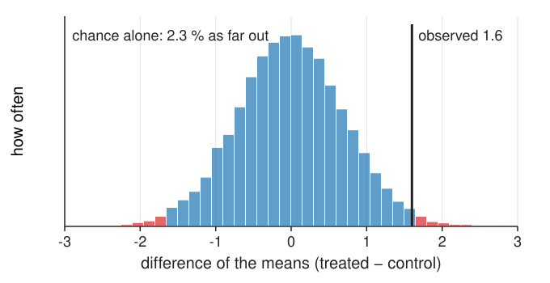
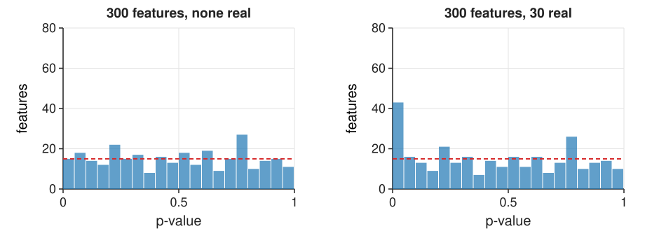

Image analysis turns images into measurements: areas, intensities, counts, hundreds of features per cell. The usual question behind them: does a treatment change a feature?
The new statistics, by simulation: standard error, p-value, confidence interval.
The unit of replication, and pseudoreplication: why 1000 cells from one dish are one replicate.
Do it right: aggregate per experiment, paired designs, the SuperPlot.
Effect sizes with confidence intervals; multiple comparisons across many features.
Batch and plate effects, and designs that are confounded beyond repair.
Slides titled The math give the formulas and proofs; the ideas are complete without them.
The data are hierarchical
A typical imaging experiment:
cells within images within wells within experiments (days, animals, patients)
Variation exists at every level: cells differ, fields differ, wells differ, and days differ: a new batch of cells, medium, stain, a refocused microscope.
The day-to-day variation is usually the largest, and it is shared by every cell measured that day.
Treatment and control are compared within this hierarchy. Which differences count as evidence?
A mean wobbles: the standard error
Measure n values with spread SD and take their mean. Repeat the whole experiment: the mean comes out a little different each time.
The wobble of the mean is its standard error: \text{SE} = \text{SD}/\sqrt n. Four times as many values halve it.
This holds for independent values. If they share a common deviation (the same day), it does not shrink below that shared part.
The difference of two means (treated − control) has \text{SE} = \sqrt{\text{SE}_1^2 + \text{SE}_2^2}.
The p-value, by simulation
Suppose the treatment does nothing. How often would chance alone give a difference at least as large as the one observed?

Four experiments per condition, experiment means with SD 1: the difference of the two means wobbles with SE 0.71. An observed difference of 1.6 or more (either sign) comes up in 2.3 % of the simulated null experiments: p = 0.023.
A small p says “chance alone rarely does this”. It says nothing about how large or important the effect is.
The confidence interval
Estimate ± 2 SE is a 95 % confidence interval: the range of true effects compatible with the data.
Observed 1.6 with SE 0.71: about 0.2 to 3.0. The effect is probably positive, but could be small or large.
The interval excludes 0 exactly when p < 0.05 (roughly); but it also shows the size and the uncertainty of the effect.
With few replicates the factor 2 is too small: it grows to 2.78 for 5 values and 4.30 for 3 (math slide).
The math: t statistic and t-distribution
One sample x_1, \dots, x_n with mean \bar x and sample SD s: \text{SE} = s/\sqrt n and
t = \frac{\bar x - \mu_0}{s / \sqrt n}.
If the x_i are independent and normal with mean \mu_0, t follows Student’s t-distribution with n - 1 degrees of freedom: like the standard normal, but with heavier tails, because s is itself estimated from few values. 95 % interval: \bar x \pm t_{0.975,\,n-1}\, s/\sqrt n, with t_{0.975} = 4.30 (2 df), 2.78 (4 df), 2.07 (22 df), 1.96 (\infty).
Two groups (Welch): t = (\bar y - \bar x)/\sqrt{s_x^2/n_x + s_y^2/n_y}, degrees of freedom from the Welch–Satterthwaite formula. Paired data: a one-sample test on the differences d_i = y_i - x_i.
The unit of replication
The unit of replication is the level at which the treatment was applied independently: the experiment, the animal, the well if wells were treated separately. Not the cell.
1000 cells from one dish are 1000 measurements of one replicate: they share the dish, the day, the stain.
Treating cells as n (pseudoreplication) makes the SE far too small, and p-values tiny even when there is no effect.
In the demo below (3 experiments per condition, 100 cells each, day-to-day SD 1, cell-to-cell SD 2, no effect), the cells-as-n test gives p < 0.05 in 69 % of repeated experiments, instead of 5 %.
The math: the two-level model
y_{ec} = \mu + \tau\,T_e + u_e + \varepsilon_{ec} for cell c of experiment e, with u_e \sim N(0, \sigma_u^2) (day) and \varepsilon_{ec} \sim N(0, \sigma^2) (cell), all independent.
Mean of the m cells of experiment e: \text{Var}(\bar y_e) = \sigma_u^2 + \sigma^2/m. Mean of all E\,m cells of a condition:
Ratio = 1 + (m - 1)\rho, the design effect, with the intra-class correlation \rho = \sigma_u^2/(\sigma_u^2 + \sigma^2). Effective number of cells: n_{\text{eff}} = E\,m/(1 + (m-1)\rho) \to E/\rho as m \to \infty. More cells cannot beat the number of experiments.
The math: how often cells-as-n is fooled
Under no effect, the cells-as-n statistic z = (\bar y_1 - \bar y_0)/\sqrt{2(\sigma_u^2 + \sigma^2)/(Em)} is normal with mean 0 but variance 1 + (m-1)\rho, not 1. It rejects when |z| > 1.96:
\rho = 0.1: m = 10: 0.16; m = 100: \sqrt{10.9} = 3.30, 2\Phi(-0.59) = 0.55; m = 1000: 0.85. (Large-E approximation; with few experiments the t-test version behaves alike, as the demo shows.)
Do it right
Aggregate per replicate: one number per experiment (mean or median of its cells), and test those E numbers. Correct false-positive rate, and the effect is unchanged.
Pair the design: control and treated in every experiment, compare within each. The day-to-day variation cancels; often far more power.
Mixed-effects models do the same with all cells kept (a pointer: they model u_e explicitly).
Show it as a SuperPlot: cells as small dots coloured by experiment, experiment means as big markers, the statistics on the big markers.
Try it: cells, experiments, pairs
More cells or more experiments?
The SE of the effect, with experiments as the unit, against the number of cells per experiment (3 experiments per condition, day-to-day SD 1, cell-to-cell SD 2):
cells per experiment
5
10
100
1000
true SE
1.10
0.97
0.83
0.82
claimed by cells as n
0.82
0.58
0.18
0.06
Beyond a few dozen cells the true SE flattens out at \sigma_u\sqrt{2/E}: the day-to-day variation dominates.
More experiments shrink it like 1/\sqrt E. A paired design removes \sigma_u altogether.
Cells-as-n claims an SE that keeps shrinking: ever smaller p-values for the same evidence.
The math: pairing removes the day
Paired design: both conditions in each experiment e. Difference of the experiment means:
The day effect u_e cancels. Unpaired comparison of experiment means: \text{Var} = 2(\sigma_u^2 + \sigma^2/m) per pair of experiments. Pairing wins whenever \sigma_u^2 > 0; it loses a little only through the degrees of freedom (E - 1 instead of 2E - 2) when \sigma_u is close to 0, or if the pairing is not real (control and treated not sharing the day).
Effect size and confidence interval first
“Treated cells were significantly larger (p < 0.0001, n = 2400)” says nothing useful:
How much larger? “12 % larger (95 % CI 4 to 20 %)” says what matters.
What is n? “n = 4 independent experiments, 600 cells each” names the unit of replication.
p < 0.0001 with 2400 cells as n is pseudoreplication; with enough cells any tiny difference becomes “significant”.
For comparing features with different units, a standardised effect: the difference divided by the SD (of experiment means, or of cells, say which).
Many features: multiple comparisons
Image-based profiling measures hundreds of features. Test 300 features with no real effect at \alpha = 0.05: about 15 “hits” by chance.

Under no effect, p-values are uniform: a flat histogram (left: 15 below 0.05, all false). Real effects add a spike near 0 (right: 30 real features).
Bonferroni: test each at \alpha/m. Controls the chance of any false hit. Strict: left 0 hits; right 13 hits, all real.
Benjamini–Hochberg (BH): controls the fraction of false hits among the hits (the false discovery rate). Right: 24 hits, 2 of them false.
Picking the best-looking feature after the fact is the same mistake as tuning on the test set.
The math: Bonferroni and Benjamini–Hochberg
m tests, all null, independent, level \alpha: P(\text{at least one false hit}) = 1 - (1 - \alpha)^m: 0.64 for m = 20, 0.99996 for m = 200.
Bonferroni. Reject when p_i \le \alpha/m. By the union bound, without any independence assumption: P\Big(\bigcup_{i \text{ null}} \{p_i \le \alpha/m\}\Big) \le \sum_{i \text{ null}} \frac{\alpha}{m} \le \alpha.
Benjamini–Hochberg at level q: sort p_{(1)} \le \dots \le p_{(m)}; find the largestk with p_{(k)} \le k\,q/m; reject the k smallest. Then E[\text{false hits}/\max(\text{hits}, 1)] \le q (for independent or positively dependent tests; stated without proof). Example: 0.001, 0.004, 0.012, 0.02, 0.03, 0.2, … with m = 10: lines 0.005, 0.010, 0.015, 0.020, 0.025: k = 4.
Try it: many features on a plate
Batch and plate effects
Day, plate, row and column, the edge wells (evaporation), the order of imaging (focus drift, bleaching): all change the measurements.
If all controls are on day 1 and all treated on day 2, the treatment effect is confounded with the day: no statistics can separate them. More cells, more wells, any test: it stays an experiment about days.
The cures are in the design: every batch contains every condition; randomise the plate layout; controls on every plate; image in a randomised or balanced order.
Then normalise against the controls of each plate (the measurements day shows how) and analyse per plate or per experiment.
A reporting checklist
n at every level (experiments, wells, images, cells), and which one is the unit of replication.
How values were aggregated (mean or median per well, per experiment).
Effect size with a confidence interval, not only a p-value.
Correction for multiple testing, and how many features were tested.
The design: pairing, randomisation, plate layout, batches.
How the image analysis was validated: the split (the leakage unit), who annotated (the agreement unit).
Images and analysis parameters available.
Summary
Standard error = the wobble of an estimate; p-value = how often chance alone gives a result this extreme; 95 % CI ≈ estimate ± 2 SE.
The unit of replication is the independently treated unit (experiment, animal, well), not the cell. Cells as n gives false positives far above 5 %.
Aggregate per replicate, or pair the design; show a SuperPlot. More experiments help, more cells hardly.
Report effect sizes with CIs.
Many features: about \alpha m false hits; correct with Bonferroni (any false hit) or Benjamini–Hochberg (false discovery rate).
Batch and plate effects confounded with the treatment cannot be fixed afterwards: randomise and balance the design.